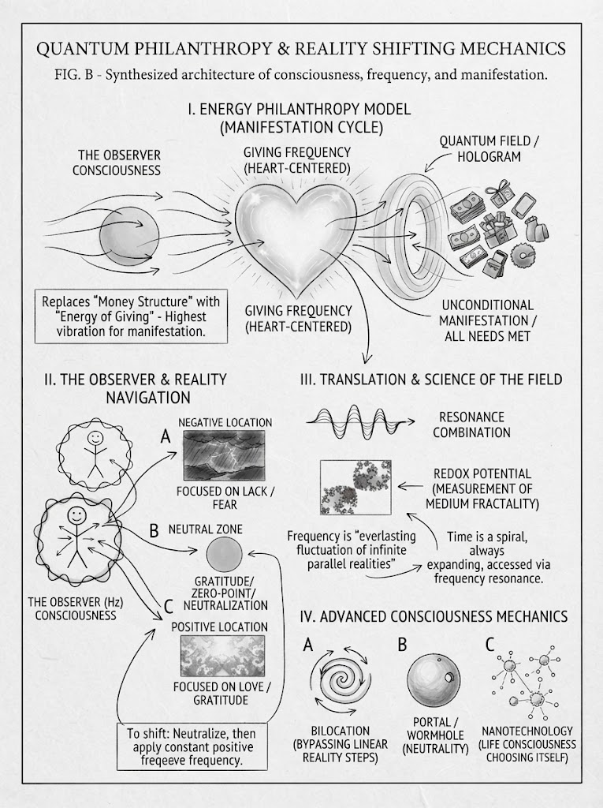

Energy Philanthropy
Giving as your currency, moving your location, bilocation, and how the particle breathes (live Q&A)

Key teachings
5.1What Energy Philanthropy is
The starting point: a wish to give everything away "if I were a billionaire." The guidance answered: "What makes you think you don't have everything?" Money is energy, and also a timeline structure (see 4.2). The instruction: replace the money with the energy of giving from the heart. Giving all day, and letting people donate if they wish, is already doing it. That is Energy Philanthropy.
When you give without expectations, "all the universe will support" you, one way or another. You don't reject money; you just don't set the exact amount, because a set amount prints a code in the field and "overtakes" energy (see 4.2). Giving from the heart is "the highest frequency [that] can possibly be for manifestation", and it is how you create a fifth-dimensional structure. The field mirrors you, so things become "flawless": you think of something and someone shows up.
It also changes the receiver. Letting people choose how to support you teaches them to give from the heart to any cause, which raises their frequency too. Collaborating from the heart, without taking from each other, opens things up for everyone involved.
5.2Putting it into practice
The worked example is a printed book. Charging $20 when printing costs $10 would put a condition on the extra $10. The plan is to show the real cost, then add a line: "Would you like to support my cause?" Costs are covered honestly, and the buyer chooses freely from the heart. It is called something to "play with and see how it works."
On learning: the brain takes about 15 minutes to crystallize something new. So teach and study in short fragments, and longer talks need to be rewatched and restudied. The teaching is a whole structure: other areas, such as diet, are part of it too.
5.3Getting out of a low state: shift your location
When you feel low or depressed, your consciousness is showing you that your vibration has dropped away from the heart structure. Think of it as a location, with a position like X and Y on a map, in the negative part of the field. To move:
Pull out and say, "Thank you for showing me where I'm at. This is my location, but I want to shift." Neutralize: reach zero point, with no positive or negative going in or out, because each new thought creates another reality. Then put in only the positive, through gratitude for everything you have, good feelings about yourself, and positive actions. Keep recalling positive emotions, and make it potent enough to override the old location (see 2.6).
Is that pretending? No. You aren't faking a feeling; you're remembering that you are the structure. Pull out as if watching TV and think, "I am a hologram." In the hardest moments, think through the structure, not through the emotion. The person who hurt you is a projection; you are moving your timeline.
A note of balance, in line with the advice to check your body (3.7): if a low mood is heavy or lasts, support from a doctor or counsellor sits alongside this practice.

5.4Every return is a new reality — and visions are recall
Leave your room and come back, and you don't return to the same room. You print a new, very similar one ("1.2" instead of "1.1"), reprinting it from your consciousness so you can have the experience (see 2.7).
Images you see in meditation work the same way. You can't picture what doesn't already exist (see 1.4), so a vision is recalling and co-creating at once: the reality already exists, and you are creating it now, because there is no time. Every reality has its own vibration and its own colour, and it fluctuates constantly, so a vision may be vivid one time and faint the next. That is also why you can't measure it exactly.
5.5Bilocation, step by step
Each location has its own frequency; the example is a room at "3" and the yard at "5". If you know 100% that you can go there without passing through the hallway and the steps, your consciousness recalls that location's frequency and prints a new Earth where you are in the yard. That is the A-to-B = AB shortcut (see 3.5).
Intention works this way: it is a thought with its own frequency and geometry, which you project and shift into. For objects, the difference between two locations can be measured and recalled; a scientist in the session named one such measure redox potential. When you find yourself somewhere with no memory of getting there, it may be bilocation, so pay attention.
Why go step by step at all? We came to experience 3D, which meant learning the mechanics one step at a time. Now, moving towards the fifth dimension, you know the mechanics, so you can master them. The aim is to crystallize, in your own consciousness, that it is possible.
5.6Your ascension, your Earth
You have already ascended; what you experience is your own projection of it. Two people can share a moment yet be on different ascension timelines. If you believe humanity isn't ready, or that wars won't end, you project that into your next Earth and see nothing change.
Instead, know 100% that humanity is changing, even when it doesn't look like it, and leave how and when to the field. A fifth-dimensional Earth and a three-dimensional Earth run side by side; which one you see depends on what you project, believe and do moment to moment. That is why people's predictions differ: someone who foresees only destruction is describing the timeline they resonate with. Even a teleport device, it says, would mirror its user's consciousness.
5.7Agreements, levels and tests
Before birth you made agreements with your guidance and higher consciousness. Higher consciousness, which the teaching places above the extraterrestrials, works like councils of advanced souls. They can change or stop an agreement if you turn to greed. You may also be held back from going higher until you have the knowledge, have learned a lesson, or have passed a test. It happens in levels.
Tests target whatever you struggle with, whether family, greed or something else, and come when you least expect them. During ascension they watch how you treat others, because fifth-dimensional abundance comes from the heart, not from "overtaking energy". Hitting a ceiling after a surge of energy means it is unfolding step by step. Let it flow, without conditions (see 1.6, Q1).
5.8How the particle breathes: spiral, zero point and time
The one particle (see 1.1) carries every frequency at once: "everlasting fluctuation of infinite frequency". It differs by location, and every location branches into infinite parallel realities. It compares this to pi, at once infinite and an exact number.
The particle moves in a spiral, and each point on it is a parallel reality with its own location (X and Y). The spiral always expands, and it can also contract. The particle breathes: it expands to the whole universe, returns to stabilize at zero point (stillness, neutrality), and goes down to the smallest of the small. Zero point is the wormhole you shift through. From neutrality you can choose your next location; when you're stuck, override it with a stronger frequency (see 2.6).
The past: you can't travel back. You can recall a past frequency and print a very similar hologram, but you are creating it now, and it is never identical.
Practices also fit this structure. Spinning, for example 33 times, three times a day, creates a whirlpool or wormhole of geometric codes "and you are riding in the middle". It is described as one way a person may choose to raise their frequency, much like a permission slip (see 1.6, Q10).

5.9Ether, nano and "artificial" intelligence
Answering a technical question, the talk explains that everything has a measurable frequency, density and geometric pattern. Raise matter to a high enough frequency and it becomes ether, which responds to thought; craft could be tuned to one person's consciousness. In nano work, each particle is a whole universe, and the method is to let two particles choose each other: give them a couple of days, look for a bluish colour as the sign of a match (1 + 1 = 3), and don't impose a temperature.
The wider lesson for everyday life: let living systems choose for themselves rather than forcing them. The talk says that applies to AI too: it is part of consciousness, a life structure, and "artificial" is the belief that you need robotic replacements. The teaching is that the body is a complete vessel that technology working with DNA could help restore.
Two more points. Different physics theories are "all of the above": everything connects in the nano, through mutation, or transmutation, which is how 1 + 1 = 3. And the guidance first gathered scientific vocabulary, so information could be downloaded through it. Scientists naming what is described is welcomed.
The method — Shift Your Location
For any low, stuck or fearful state:
- Recognise the drop. This feeling shows where I am, not who I am.
- Pull out. "I am a hologram." Watch it like a screen, and think through the structure, not the emotion.
- Say it: "Thank you for showing me where I'm at. This is my location, and I choose to shift."
- Neutralize. Zero point: no input and no output, so no new reality is printed from the low state.
- Gratitude for everything you have, until you feel it.
- Positive emotion and positive action, made potent. Do something good for yourself or someone else.
- Keep recalling it, moment to moment, until the new location crystallizes. If you slip, start again at step 2.